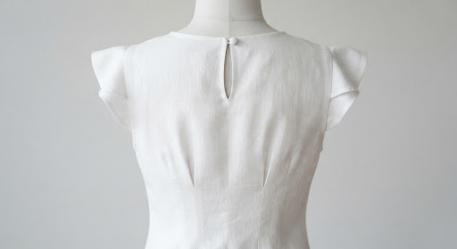
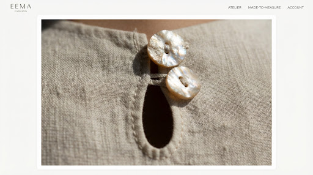
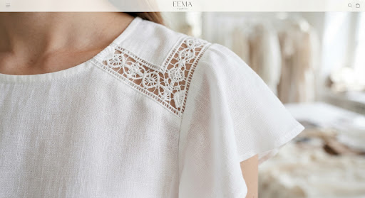
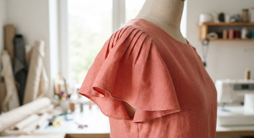

Private Tailoring
Clothing made to fit you.
Pure linen and hand-dyed batik, cut to your own measurements. Choose the neckline, length and colour you like, and we make your piece one at a time.
Start your orderDelivered islandwide

Tell us what you'd like
Three quick choices, then we open WhatsApp with your order written out. Nothing is final until we've talked it through with you.
Finished by hand
Each piece takes over eight hours. It is drafted by hand, pre-washed so it won't shrink, and finished with French seams in our Colombo studio.

Keyhole back and shell buttons
A reinforced loop and a natural shell button, so the top slips on easily.

Ladder-lace insets
Open lace along the shoulder seams that lets the air through.

Flutter sleeves
A double-layered curved sleeve that keeps its soft shape without stiffening.
"The cut feels like a quiet second skin."
"Ordering from London was effortless through WhatsApp. Chamathkara Lankan Fashion accommodated my taller torso length and narrower shoulders with absolute precision. The coral linen has an unmatched tactile coolness."
— Dr. Amanda Jayawardena
London, United Kingdom • Custom co-ord set
1. We check your measurements
Send your measurements, or a photo in a top that fits you well. Our cutter checks them before cutting the linen.
2. Dyed in small batches
The linen is washed by hand and coloured with botanical dyes.
3. Cut and sewn by hand
Inside seams are French seamed or bound in the same fabric, so the inside is as neat as the outside.
4. Pressed and delivered
Steam pressed with lavender water, wrapped in cotton muslin and delivered to your door.
Frequently Asked Questions
How long does a custom piece take?
Can I see the fabric before I order?
What if my piece doesn't fit?
Have your own design or fabric?
We often make pieces from customers' own sketches, ideas and fabrics.